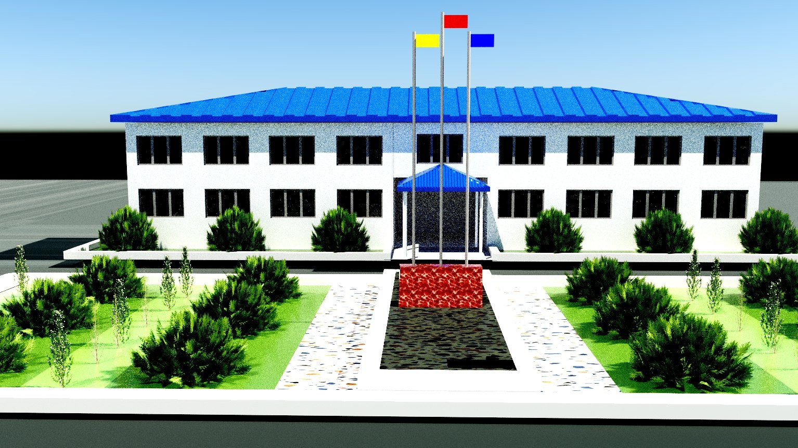
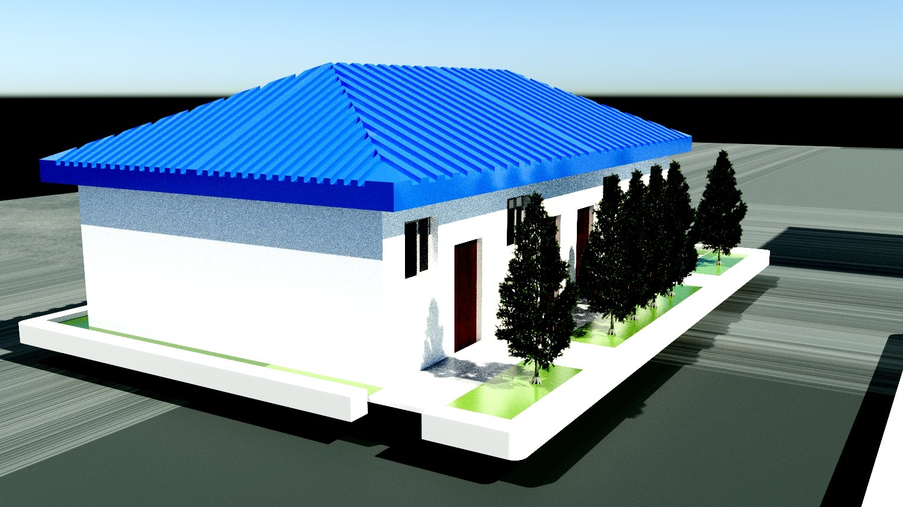

06 / Environment
校园建筑场景
一栋两层主楼、两栋单层侧屋，加中间的广场、旗杆与绿化带。用三个视角交代同一组空间关系。
- 类型
- 场景 / 建筑建模
- 年份
- 2026
- 工具
- C4D · Blender
- 输出
- 三视角静帧

Design Notes / 设计说明
这一组不是单体，而是一个完整的院落关系：主楼在中轴线上，两栋侧屋在两侧翼，中间夹出一块带旗杆的广场，前面是分格的绿化带与步道。
造型上刻意做成低多边形的概括感——彩钢屋顶、白墙、黑色窗洞，几乎没有多余细节。这不是偷懒，而是想让观者在第一眼就读懂体块与空间的关系：哪栋是主体、哪栋是附属、人从哪里走进去。
三个视角各有分工：鸟瞰总览讲整体布局，主房正立面讲建筑的对称与秩序，侧屋透视讲单体与周边绿化的关系。同一套模型、同一个光源，只换机位。
建筑场景里，机位就是叙事。站在哪里看，比模型做了多少面更重要。
做这组的时候我在练习一件很基础的事：把尺度感做对。窗户的高度、树的高度、旗杆的比例、步道的宽度——只要有一处不对，整张图就会"假"。
Gallery / 三视角

